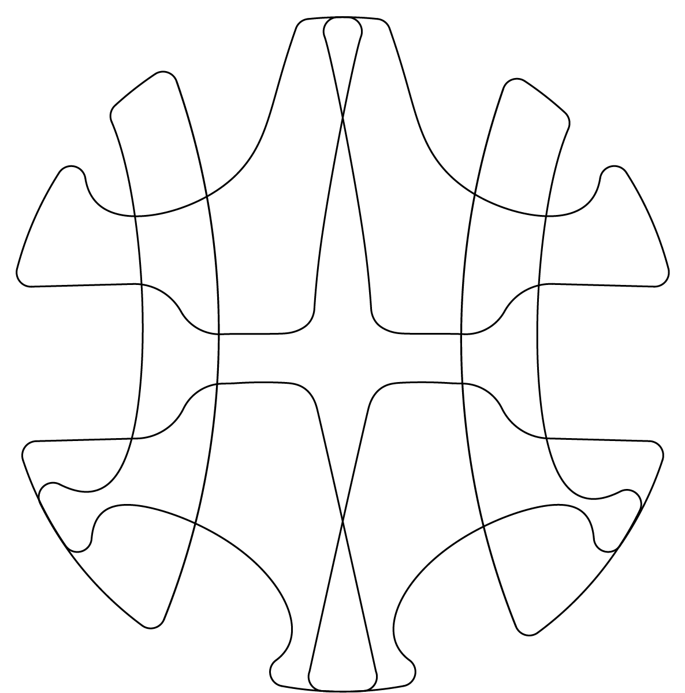

Ich verstehe Gestaltung als die Suche nach Potenzialen, die mehr können als nur ein Problem zu lösen. Es geht mir darum, Überschneidungspunkte zwischen unterschiedlichen Anforderungen zu finden und so ein Objekt zu schaffen, das selbstverständlich wirkt, weil es in Material, Form und Funktion nachvollziehbar ist. Gestaltung bedeutet für mich Verantwortung, gegenüber der Umwelt, den Menschen und dem Prozess selbst. Ehrliche, bewusste Entscheidungen sind der Kern meines Designs. Objekte sollten keine falschen Versprechen machen, sondern durch Klarheit und mutige Reduktion überzeugen. Ich arbeite experimentell, lasse mich von Materialien und ihren Eigenschaften inspirieren und sehe im Skizzieren, Modellbauen und digitalen Entwerfen gleichwertige Werkzeuge, um Ideen zu präzisieren und Potenziale auszuloten. Mein Ziel ist es, Produkte zu gestalten, die nicht nur ästhetisch und funktional sind, sondern auch durch ihre Logik und Offenheit begeistern.

Leon Remmert has been studying Product Design at the University of the Arts Berlin since 2023. He is engaged intensively with other artistic disciplines such as photography, painting, and drawing. In his current practice, he is interested in themes like transformation, technology, and recontextualizing established narratives.He follows an experimental and material-driven approach.
leonremmert1@gmail.com
@leonard0_tornado